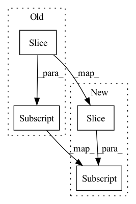

Pattern ID :719
Before Change
self.elementwise_affine = elementwise_affine
self.norm = torch.nn.LayerNorm(
input_shape[2:] ,
eps=self.eps,
elementwise_affine=self.elementwise_affine,
)After Change
self.elementwise_affine = elementwise_affine
if input_shape is not None:
input_size = input_shape[2:]
self.norm = torch.nn.LayerNorm(
input_size,
eps=self.eps,In pattern: SUPERPATTERN
Frequency: 8
Non-data size: 4
Instances Fragment ID: 2422580
Project Name: speechbrain/speechbrain
Commit Name: db029a125060b0df3d56a511d44e7b36354af42d
Time: 2020-10-12
Author: jzhong9@u.rochester.edu
File Name: speechbrain/nnet/normalization.py
M Class Name: LayerNorm
N Class Name: LayerNorm
M Method Name: __init__(5)
N Method Name: __init__(4)
M Parent Class: nn.Module
N Parent Class: nn.Module
M File Name: speechbrain/nnet/normalization.py
N File Name: speechbrain/nnet/normalization.py
M Start Line: 198
M End Line: 202
N Start Line: 195
N End Line: 211
Before Change
band = hz[1:] - hz[:-1]
self.band = band[:-1]
self.f_central = hz[1:-1]
// Adding the central frequency and the band to the list of nn param
if not self.freeze:
self.f_central = nn.Parameter(self.f_central)After Change
band = hz[1:] - hz[:-1]
self.band = band[:-1].to(self.device_inp)
self.f_central = hz[1:-1] .to(self.device_inp)
// Adding the central frequency and the band to the list of nn param
if not self.freeze: Fragment ID: 2422582
Project Name: speechbrain/speechbrain
Commit Name: 3cbbcf1191978683a0f6926b9960e648059d08b4
Time: 2020-03-19
Author: mirco.ravabelli@gmail.com
File Name: speechbrain/processing/features.py
M Class Name: FBANKs
N Class Name: FBANKs
M Method Name: __init__(7)
N Method Name: __init__(7)
M Parent Class: nn.Module
N Parent Class: nn.Module
M File Name: speechbrain/processing/features.py
N File Name: speechbrain/processing/features.py
M Start Line: 707
M End Line: 713
N Start Line: 670
N End Line: 734
Before Change
layers = []
in_chan = channels[0]
for out_chan in channels[1:] :
layers += self.make_block(in_chan, out_chan, **kwargs)
in_chan = out_chan
After Change
layers = []
in_chan = channels[0]
for i, out_chan in enumerate(channels[1:] ):
is_last = i == len(channels[1:]) - 1
layers += self.make_block(
in_chan, out_chan, Norm, is_bias, is_last, **kwargs Fragment ID: 2422567
Project Name: yanndubs/lossyless
Commit Name: 8d0b92cd06cc7a28c576c96a4010a7e74ab785f0
Time: 2021-01-11
Author: yanndubois96@gmail.com
File Name: lossyless/architectures.py
M Class Name: CNN
N Class Name: CNN
M Method Name: __init__(6)
N Method Name: __init__(6)
M Parent Class: nn.Module
N Parent Class: nn.Module
M File Name: lossyless/architectures.py
N File Name: lossyless/architectures.py
M Start Line: 295
M End Line: 305
N Start Line: 289
N End Line: 314
Before Change
// for automatically offsetting unique category ids to the correct position in the categories embedding table
categories_offset = F.pad(torch.tensor(list(categories)), (1, 0), value = 0).cumsum(dim = -1)[:-1]
self.register_buffer("categories_offset", categories_offset)
self.categorical_embeds = nn.Embedding(self.num_unique_categories, dim)
After Change
// for automatically offsetting unique category ids to the correct position in the categories embedding table
categories_offset = F.pad(torch.tensor(list(categories)), (1, 0), value = num_special_tokens)
categories_offset = categories_offset.cumsum(dim = -1)[:-1]
self.register_buffer("categories_offset", categories_offset)
// continuous
Fragment ID: 2422578
Project Name: lucidrains/tab-transformer-pytorch
Commit Name: f831f2b36e2cf18dbf601b0fc1152154330bf6bb
Time: 2020-12-20
Author: lucidrains@gmail.com
File Name: tab_transformer_pytorch/tab_transformer_pytorch.py
M Class Name: TabTransformer
N Class Name: TabTransformer
M Method Name: __init__(1)
N Method Name: __init__(1)
M Parent Class: nn.Module
N Parent Class: nn.Module
M File Name: tab_transformer_pytorch/tab_transformer_pytorch.py
N File Name: tab_transformer_pytorch/tab_transformer_pytorch.py
M Start Line: 126
M End Line: 133
N Start Line: 127
N End Line: 139
Before Change
ramp = np.arange(self.cep_order + 1, dtype=default_dtype()) * half_fft_length
if self.cep_order == half_fft_length:
ramp[-1] *= 2
ramp[1:] = np.reciprocal(ramp[1:] )
self.register_buffer("ramp", torch.from_numpy(ramp))
def forward(self, n):After Change
ramp = np.arange(self.cep_order + 1, dtype=np.float64) * half_fft_length
if self.cep_order == half_fft_length:
ramp[-1] *= 2
ramp[1:] = 1 / ramp[1:]
self.register_buffer("ramp", numpy_to_torch(ramp))
def forward(self, n):
Convert NPDS to cepstrum. Fragment ID: 2422575
Project Name: sp-nitech/diffsptk
Commit Name: 8554148138fd5ebcbc70e0af9d283a62c0175594
Time: 2023-01-30
Author: takenori.yoshimura24@gmail.com
File Name: diffsptk/core/ndps2c.py
M Class Name: NegativeDerivativeOfPhaseSpectrumToCepstrum
N Class Name: NegativeDerivativeOfPhaseSpectrumToCepstrum
M Method Name: __init__(3)
N Method Name: __init__(3)
M Parent Class: nn.Module
N Parent Class: nn.Module
M File Name: diffsptk/core/ndps2c.py
N File Name: diffsptk/core/ndps2c.py
M Start Line: 48
M End Line: 52
N Start Line: 48
N End Line: 51
Before Change
def __init__(self, layout: List[int], in_channels: int = 64) -> None:
super().__init__()
_decoder_layers = [
self.decoder_block(out_chan, in_chan) for in_chan, out_chan in zip([in_channels] + layout[:-1] , layout)
]
self.decoders = nn.ModuleList(_decoder_layers)
After Change
chans = [shape[0] for shape in layer_shapes]
_decoder_layers = [
self.decoder_block(ochan, ichan, stride) for ichan, ochan, stride in zip(chans[:-1] , chans[1:], strides)
]
self.decoders = nn.ModuleList(_decoder_layers) Fragment ID: 2422584
Project Name: mindee/doctr
Commit Name: 808081f1af02251fb5d89bfe1f44a8e6b8acd9f8
Time: 2021-12-22
Author: 76527547+fg-mindee@users.noreply.github.com
File Name: doctr/models/detection/linknet/pytorch.py
M Class Name: LinkNetFPN
N Class Name: LinkNetFPN
M Method Name: __init__(2)
N Method Name: __init__(3)
M Parent Class: nn.Module
N Parent Class: nn.Module
M File Name: doctr/models/detection/linknet/pytorch.py
N File Name: doctr/models/detection/linknet/pytorch.py
M Start Line: 82
M End Line: 85
N Start Line: 34
N End Line: 44
Before Change
layers = []
in_chan = channels[0]
for out_chan in channels[1:] :
layers += self.make_block(in_chan, out_chan, **kwargs)
in_chan = out_chan
After Change
layers = []
in_chan = channels[0]
for i, out_chan in enumerate(channels[1:] ):
is_last = i == len(channels[1:]) - 1
layers += self.make_block(
in_chan, out_chan, Norm, is_bias, is_last, **kwargs Fragment ID: 2422570
Project Name: yanndubs/lossyless
Commit Name: 13635d5b71407b90db9f67f15f10454ee90abb4d
Time: 2021-01-11
Author: yanndubois96@gmail.com
File Name: lossyless/architectures.py
M Class Name: CNN
N Class Name: CNN
M Method Name: __init__(6)
N Method Name: __init__(6)
M Parent Class: nn.Module
N Parent Class: nn.Module
M File Name: lossyless/architectures.py
N File Name: lossyless/architectures.py
M Start Line: 295
M End Line: 305
N Start Line: 289
N End Line: 314
Before Change
self.activation = activation
self.use_dense = use_dense
in_units = [observation_shape[0]] + hidden_units[:-1]
self.fcs = nn.ModuleList()
self.bns = nn.ModuleList()
for i, (in_unit, out_unit) in enumerate(zip(in_units, hidden_units)):
if use_dense and i > 0:After Change
self._activation = activation // type: ignore
self._use_dense = use_dense
in_units = [observation_shape[0]] + list(hidden_units[:-1] )
self._fcs = nn.ModuleList()
self._bns = nn.ModuleList()
for i, (in_unit, out_unit) in enumerate(zip(in_units, hidden_units)): Fragment ID: 2422571
Project Name: takuseno/d3rlpy
Commit Name: fa00fbc73c067646082b9c50c3b94a1a28459ccc
Time: 2020-12-31
Author: takuma.seno@gmail.com
File Name: d3rlpy/models/torch/encoders.py
M Class Name: VectorEncoder
N Class Name: _VectorEncoder
M Method Name: __init__(6)
N Method Name: __init__(6)
M Parent Class: nn.Module
N Parent Class: nn.Module
M File Name: d3rlpy/models/torch/encoders.py
N File Name: d3rlpy/models/torch/encoders.py
M Start Line: 108
M End Line: 124
N Start Line: 174
N End Line: 191